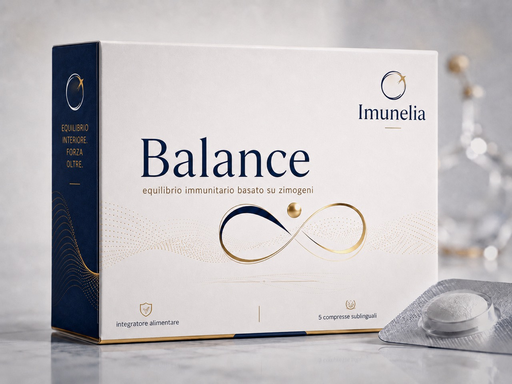

01 / Balance
Rovnováha jako základ celého systému.
Balance je hlavní linie Imunelia pro každodenní stabilitu, klidnou odolnost a návrat těla k čitelnému rytmu. Komunikuje ne jako výkon, ale jako základ: když se systém ztiší, začne být znovu slyšet.
- Pro dlouhodobou práci s rovnováhou a každodenní podporou.
- Prémiová, čistá komunikace bez tvrdých medicínských slibů.
- Vizuálně hlavní produkt značky.